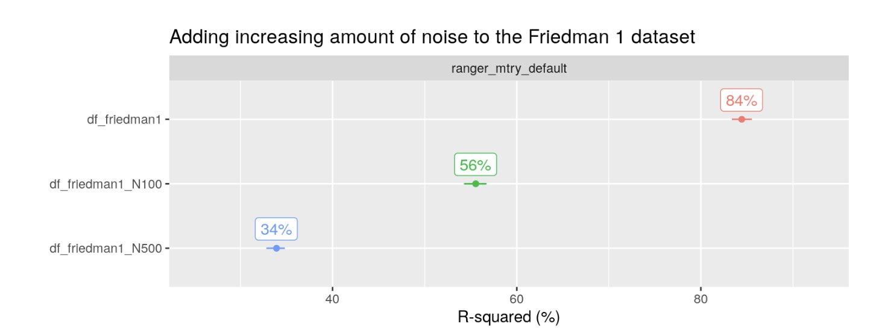
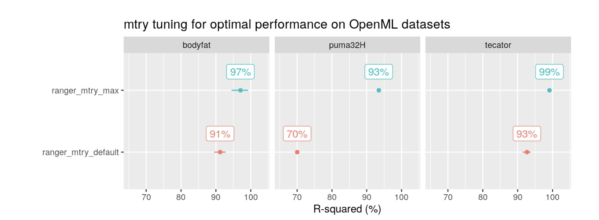

When the search space is quite large, try the particle swarm method or genetic algorithm for optimization.
Early Stopping can lower computational costs and decrease practitioner downtime
Pairwise Tuning
Tunes a pair of parameters at a time. Once the first pair of parameters is tuned, those values replace the default parameter values, and the next pair of parameters is tuned, etc.
Limits the computational cost of performing a full grid search jointly with all parameters at once supposedly without sacrificing much in terms of predictive performance.
A full grid search or other tuning method can be applied to each pair.
Might be beneficial to create pairs that affect the same tuning area of the model fit (e.g. subsampling, regularization, tree complexity) so that the tuning process might capture any interaction effects between the parameters.
Each pair of parameters along with the loss metric are plotted in a 3D chart
matplotlib::plot_trisurf() uses Surface Triangulation is used to interpolate the gaps between the tested parameter values
If the chart has multiple pronounced dips and bumps (left chart):
May indicate that there’s a minima in one of the dips that might be better than the chosen parameter values as the interpolation process might have smoothed over that area a bit.
Might want to play with the smoothing parameter a bit to try and get a clearer idea of the range of values to further investigate.
Indicates the model is sensitive to this pair of parameters which might translate into a model instability, when we pass a new type of dataset into the tuned model in the deployment domain.
Bayesian Optimization
tl;dr
Builds a surrogate model using Gaussian Processes that estimates model score
This surrogate is then provided with configurations picked randomly, and the one that gives the best score is kept for training
Each new training updates the posterior knowledge of the surrogate model.
Components:
The black box function to optimize: f(x).
We want to find the value of x which globally optimizes f(x) (aka objective function, the target function, or the loss function)
The acquisition function: a(x)
Used to generate new values of x for evaluation with f(x).
a(x) internally relies on a Gaussian process model m(X, y) to generate new values of x.
Steps:
Define the black box function f(x), the acquisition function a(x) and the search space of the parameter x.
Generate some initial values of x randomly, and measure the corresponding outputs from f(x).
Fit a Gaussian process model m(X, y) onto X = x and y = f(x) (i.e. surrogate model for f(x))
The acquisition function a(x) then uses m(X, y) to generate new values of x as follows:
Use m(X, y) to predict how f(x) varies with x.
The value of x which leads to the largest predicted value in m(X, y) is then suggested as the next sample of x to evaluate with f(x).
Repeat the optimization process in steps 3 and 4 until we finally get a value of x that leads to the global optimum of f(x).
All historical values of x and f(x) should be used to train the Gaussian process model m(X, y) in the next iteration — as the number of data points increases, m(X, y) becomes better at predicting the optimum of f(x).
Typically outperforms basic bayesian optimization, but the main selling point is it handles complex hyperparameter relationships via a tree structure.
Supports categorical variables (cat hyperparams?) which traditional Bayesian optimization does not.
Process
Train a model with several sets of randomly-selected hyperparameters, returning objective function values.
Split our observed objective function values into “good” and “bad” groups, according to some threshold gamma (γ).
Calculate the “promisingness” score, which is just P(x|good) / P(x|bad).
Determine the hyperparameters that maximize promisingness via mixture models.
Fit our model using the hyperparameters from step 4.
Repeat steps 2–5 until a stopping criteria.
Tips/Tricks
HyperOpt is parallelizable via both Apache Spark and MongoDB. If you’re working with multiple cores, wether it be in the cloud or on your local machine, this can dramatically reduce runtime.
If you’re parallelizing the tuning process via Apache Spark, use a SparkTrialsobject for single node ML models (sklearn) and a Trails object for parallelized ML models (MLlib).
MLflow easily integrates with HyperOpt.
Don’t narrow down the search space too early. Some combinations of hyperparameters may be surprisingly effective.
Defining the search space can be tricky, especially if you don’t know the functional form of your hyperparameters. However, from personal experience TPE is pretty robust to misspecification of those functional forms.
Choosing a good objective function goes a long way. In most cases, error is not created equal. If a certain type of error is more problematic, make sure to build that logic into to your function.
Tranforming continuous features using PCA can improve predictive performance
Hyperparameters
Maximum Depth (aka Tree Depth): maximum level a tree can “descend” during the training process
too high may lead to overfit
too low may lead to underfit
Minimum Samples Split: control how many observations a node must contain to be available for a split
too low may lead to overfit
too high may lead to underfit
Minimum Samples Leaf (aka Min N): number of observations in a node after the split has “potentially” happened
too low may lead to overfit
too high may lead to underfit
Minimum Impurity Decrease: sets the threshold for the amount of impurity decrease that must occur in order for there to be another split
too low may lead to overfit
too high may lead to underfit
Maximum Features: randomly choosing a set of features for each split
Useful for high dimension datasets; adds some randomness
too high can lead to long training times
too low may lead to underfit
Random Forest
Misc
Implicit features selection is performed by splitting, but performance decreases substantially if over 100 noise-like features are added & drastically if over 500 noise-like features 
Hyperparameters
mtry: the number of trees at each node
Most influential hyperparameter for random forests.
Increasing it improves performance in the presence of noise 
Default: square root of the number of features
Similar improvements can be had with (explicit) feature selection (e.g. recursive feature elimation)
LightGBM
Notes
Parameters are listed from most to least important
Seems like the strategy should be to tune structure first, then move to accuracy or overfitting parameters based on results
Missing values should be encoded as NA_integer_
Processing: it is recommended to rescale data before training so that features have similar mean and standard deviation
Hyperparameters
Structure
num_leaves: the number of decision nodes in a tree
kaggle recommendation: 2^(max_depth)
translates to a range of 8 - 4096
max_depth: The complexity of each tree
kaggle recommendation: 3 - 12
min_data_in_leaf: the minimum number of observations that fit the decision criteria in a leaf
Value depends on sample size and num_leaves
lightgbm doc recommendation: 100 - 10000 for large datasets
linear_tree (docs): fits piecewise linear gradient boosting tree
Tree splits are chosen in the usual way, but the model at each leaf is linear instead of constant
The first tree has constant leaf values
Helps to extrapolate linear trends in forecasting
Categorical features are used for splits as normal but are not used in the linear models
Increases memory use; no L1 regularization
Accuracy
n_estimators: controls the number of decision trees
learning_rate: step size parameter of the gradient descent
Kaggle recommendation: 0.01 - 0.3
Moving outside this range is usually towards zero
max_bin: controls the maximum number of bins that continuous features will bucketed into
default = 255
Overfitting
lambda_l1, lambda_l2: regularization
Default: 0
Kaggle recommendation: 0 - 100
min_gain_to_split: the reduction in training loss that results from adding a split point
Default: 0
Extra regularization in large parameter grids
Reduces training time
bagging_fraction: randomly select this percentage of data without resampling
Default: 1
* must set bagging_freq to an integer *
feature_fraction: specifies the percentage of features to sample from when training each tree
Default: 1
* Must set bagging_freq to an integer *
bagging_freq: frequency for bagging
Default: 0 (disabled)
(Integer) e.g. Setting to 2 means perform bagging at every 2nd iteration
stopping_rounds: early stopping
Issues (from docs)
Poor Accuracy
Use large max_bin (may be slower)
Use small learning_rate with large num_iterations
Use large num_leaves (may cause over-fitting)
Use bigger training data
Overfitting
Use small max_bin
Use small num_leaves
Use min_data_in_leaf and min_sum_hessian_in_leaf
Use bagging by set bagging_fraction and bagging_freq
Use feature sub-sampling by set feature_fraction
Use bigger training data
Try lambda_l1, lambda_l2 and min_gain_to_split for regularization
Try max_depth to avoid growing deep tree
Try extra_trees
Try increasing path_smooth
XGBoost
Notes
Drob starts with learning rate = 0.01 and tune other parameters before coming back to tune learning rate
Kuhn suggests setting trees to about 500 and tune stop_iter
stop_iter: early stopping; stops if no improvement has been made after this many iterations
Uber found that the most important hyperparameters were:
tree_depth, trees, learning_rate, and min_n
tree_method (more details about exact, approx)- specify which tree construction algorithm you want to use. Trade-offs between accuracy and speed
“exact” - accurate algorithm, but it is not very scalable as during each split find procedure it iterates over all entries of input data.
Inefficient when the data does not completely fit into memory
Doesn’t support distributed training
“approx” - uses quantile sketch and gradient histograms
“hist” - method used in lightgbm with slight changes (binning continuous features)
Applies some of approx performance enhancements (e.g. bin caching)
Typically faster than approx
“gpu_hist” - gpu implementation of “hist”
Much faster than “hist” and usually requires less memory
Details on performance, durations, etc. between sequential and simultaneous tuning methods
Links to repo, experimental paper
tldr;
They like the simultaneous tuning because had the best metric performance with the lowest variance (more stable results)
I think the sequential tuning method was comparable (and better in some cases) to the simultaneous tuning method but is probably faster and less costly.
On the left side are typical structures with individual predictive models being fed into an ensemble model (e.g. Random Forest)
On the right side, some kind of feature engineering process or modeling happens prior to the predictive model/ensemble model.
Sequential Tuning
Only one model is tuned at a time
The scoring, during the tuning process, happens on the ensemble model
Example
Structure
(top pipe) KNN feeds its predictions to the ridge regression which feeds it’s predictions to the lasso regression (ensemble model)
(bottom pipe) Ridge regression feeds its predictions to the random forest which feeds it’s predictions to the lasso regression (ensemble model)
Red arrows indicate how far the data/predictions have travelled through the structure. Here it’s all the way to the ensemble model
Red circle indictates which model is currently being tuned
Models without hyperparameter values are models with default values for their hyperparameters
Figure shows that the KNN and the RR (bottom pipe) models have already been tuned and the RR model (top pipe) is the model being tuned.
The red Y’ indicates that the prediction scoring, while ridge regression is being tuned, is happening at the ensemble model.
RF gets tuned next then finally the ensemble model
Simultaneous Tuning
All models, including the ensemble model, are tuned at the same time
Computationally expensive
I’d think it would be more monetarily expensive as well given that you likely have to provision more machines in any realistic scenario to get a decent training time (one for each pipe?)
Example
See Sequential tuning example for details on the structure and what items in the figure represent.
DL
Increasing or decreasing the number of training iterations
Learning Rate Scheduling (article): The schedule reduces the learning rate as training progresses, so take smaller step sizes near and around the optimum
{kind=link}
{kind=link}
{kind=link}
{kind=link}
.png)
.png)
{kind=link}
{kind=link}
{kind=link}